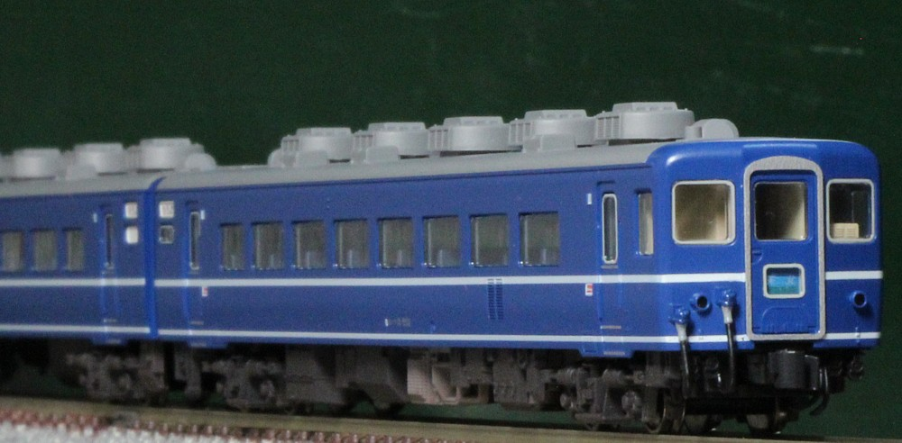
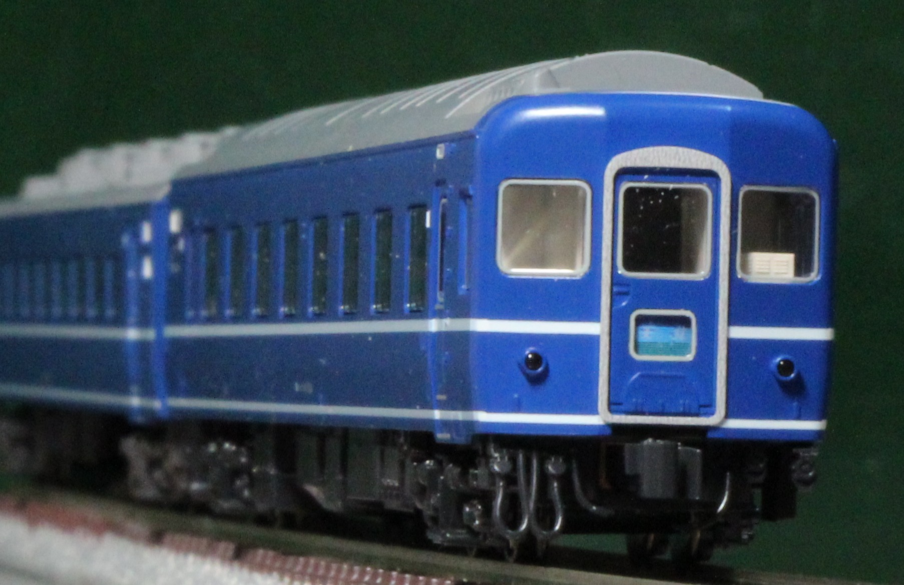

|
「ニセコ」で座席車が発売され、続いて「利尻」で寝台車が出てきました。 |
|  |
|
スハフ14。 妙に鮮やかな色の室内をつや消し青で塗装。車掌室周りはクリーム色(セールカラー)です。 窓から見えている車内放送設備は灰色か緑色っぽいですが、色が不明でまだ塗り分けていません。 ジャンパケーブルは青で塗装後、灰色と黒で塗り分けました。 北海道の車両ということで、床下はハードに汚しています。 テールマークは「天北」。短編成でDE10と組み合わせて遊んでいます。 ちなみに私は天北線の廃止には間に合いませんでした。「利尻」はキハ400系化され、「大雪」「まりも」が14系で残ってた頃。 |
|  |
スハネフのほうはまだ床下も塗装しておらず、どノーマルです。 改造せずにこんな車両が手元にあるだけで夢のようで…。 |